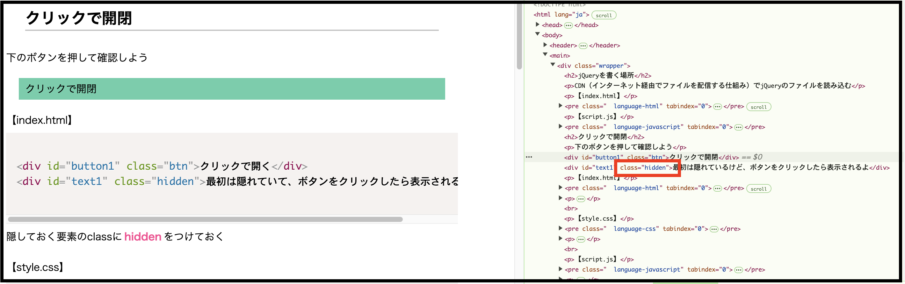
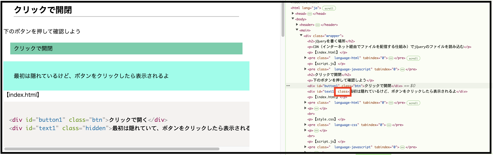

jQueryを書く場所
CDN（インターネット経由でファイルを配信する仕組み）でjQueryのファイルを読み込む
【index.html】
【script.js】
クリックで開閉
下のボタンを押して確認しよう
最初は隠れているけど、ボタンをクリックしたら表示されるよ
【index.html】
隠しておく要素のclassにhiddenをつけておく
【style.css】
classにhiddenがついている時display:none;とし、非表示にする
【script.js】
jQueryでid="button1"をクリックしたときid="text1"のclassにhiddenがついていたら削除する
最初の状態
hiddenがついているので非表示
クリックした後
hiddenがが消えたので表示
